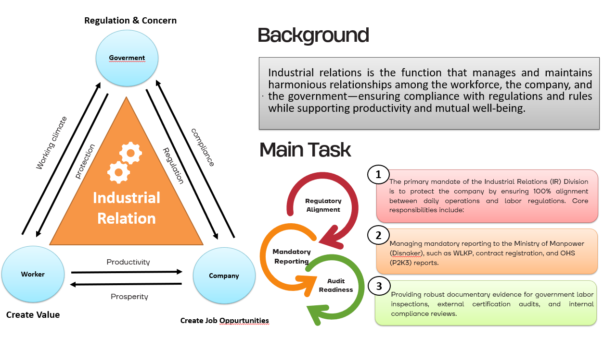
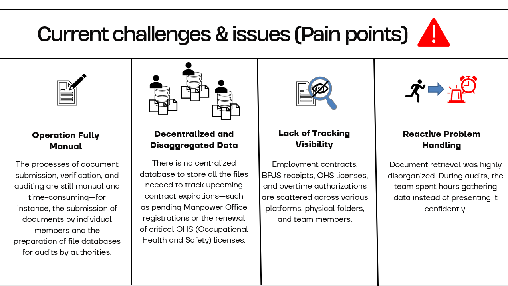
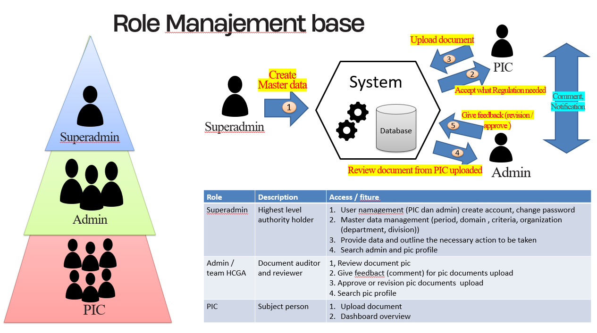
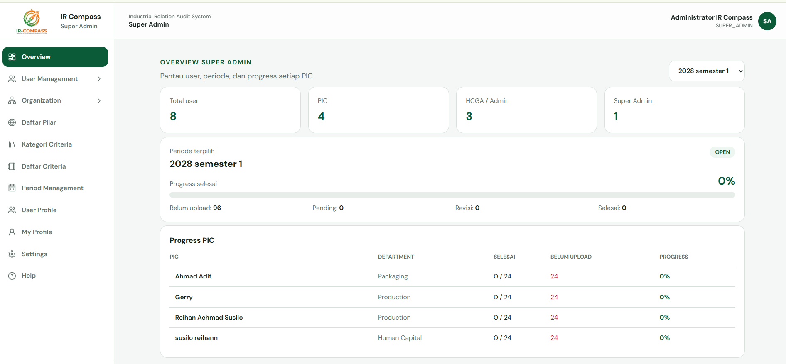
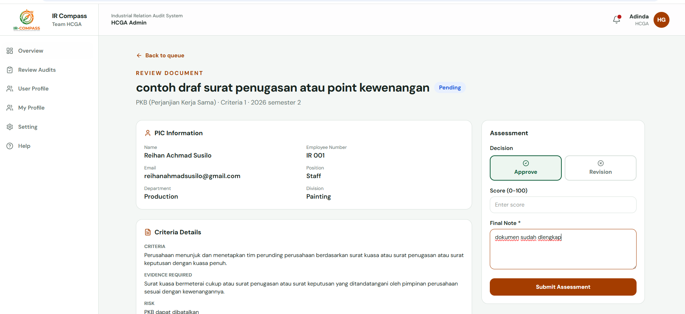
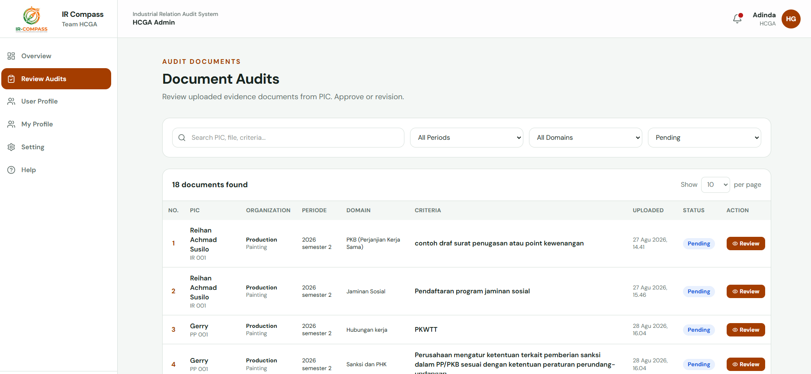
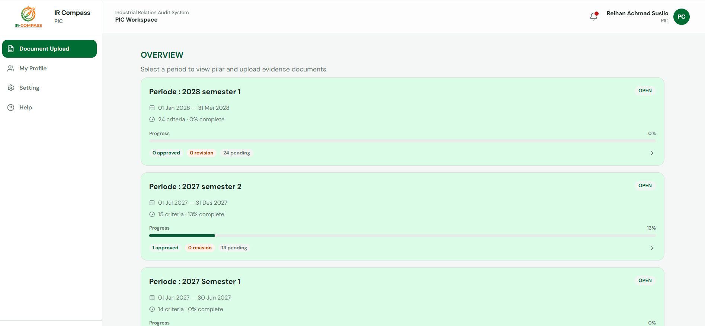
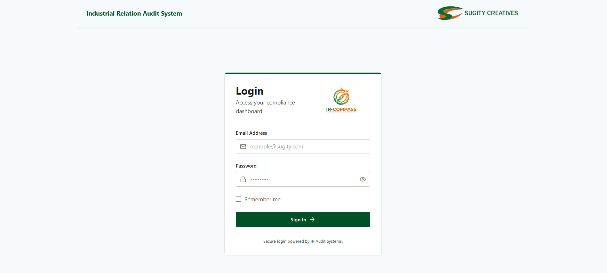

Project Detail
IR_COMPASS
An audit system for the Industrial Relations division to review compliance between company regulations and government rules.
- Next.js
- Express.js
- PostgreSQL
About this project
Digitized the system audit process for the Industrial Relations division at PT. Sugity Creatives.
Employee uploads went from hours of manual work to minutes. All evidentiary files now live in one central database.
Industrial Relations is the function that manages and maintains harmonious relationships among the workforce, the company, and the government — ensuring compliance with regulations and rules while supporting productivity and mutual well-being. At PT. Sugity Creatives, that means keeping company policies aligned with government regulations in every audit period: collecting workforce documents, reviewing them against the rules, scoring compliance, and monitoring follow-ups. IR_COMPASS digitizes that entire loop, so the relationship between people, company, and regulator is backed by data that is complete, traceable, and always ready for audit.

-
Hours → Minutes
Uploads take minutes, not hours.
-
Centralized Data
One database for all evidence.
-
Compliance Review
Audit, scoring & monitoring in one flow.
-
Digital Process
Manual steps turned into digital flows.
Problem discovery
Bottlenecks found before writing any code.
-
Step 1 · Observe
Manual, scattered workflow
Docs in chats, evidence collection took hours.
-
Step 2 · Interview
Pain points with PICs
Slow submissions, files hard to find.
-
Step 3 · Define
No structured review flow
Ad hoc checks, manual untracked scoring.

Solution offered
One platform covering the full audit loop.
-
Self-service document upload
Direct uploads — minutes, not hours.
-
Single centralized database
One PostgreSQL database — files found in seconds.
-
Structured review & scoring
Consistent scoring against compliance rules.
-
Compliance monitoring dashboard
Periods, PIC progress, and status at a glance.

How it works
Simple flow of the website, end to end.
-
Step 1 · Setup
Master data setup
Superadmin sets up users, domains, criteria, and prepares the period to open.
-
Step 2 · Launch
Period launched
Superadmin launches the period for the upload process.
-
Step 3 · Upload
PIC uploads evidence
PIC uploads required evidence matching each criterion.
-
Step 4 · Review
Admin reviews evidence
Admin reviews the uploaded evidence.
-
Step 5 · Approve
Approved, score rises
Approved evidence increases the assessment score.
-
Step 6 · Archive
Becomes history document
Approved evidence is archived as a history document.
-
Step 7 · Done
Finished
Audit loop complete for the period.
Gallery





